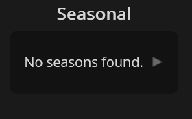

Creating Elements
Something I found frustrating and a bit harder to read was making elements with attributes.
It was quick and easy with innerHTML, but using that could cause unintended side effects such as removing
events previously attatched to it. When adding attributes using the element variable, is meant
I would have to define it, then set each attribute individually with its own code statement.
I wanted a way to create an element with a single code statement that could not lose any data in the process.
So, I made a function that took in everything. It basically uses the bracket syntax to set properties based
on the object you provide which would be key-value pairs of the attributes to set. You can even set the inner
text using that object so it makes creating elements much more concise, easier to read, and quicker to write.
It even works with adding classes, datasets, and non-standard attributes.

This image shows everything working as intended allowing for all the major things to be created for an element with only a single code statement.
Try Appending Elements
I noticed that sometimes there was data from the api that was null such as alternate titles. A normal person would probably just make an if statement for the thing that could be null and call it a day, but I decided I wanted to make an easy way to do this in one line that worked for any element rather than hard coding it every time. In that vain, I made a function called `tryAppend` which will create an element and append it to a parent element only if the specified data is valid. If any of the included data is invalid, it will not create or append the element at all. This way, the HTML doesn't have any tags that are empty shells or contain the word "null" meaning it is more semantic and clean This is especially
Foldable Containers

I created a foldable mechanism that allowed for sections to be folded and unfolded. For styling, I basically created a finite state machine accros both css and javascript and I think it turned out pretty well. Something to note is that it is not hard coded, it supports any number of foldable sections, works with nested foldable sections, and can allow for multiple foldables to be open at once (even though I limited it to only have one unfolded at a time since I think it makes it easier for the user to understand that the filters and sorting won't work on the "Lists" section).
Documentation and Code Style
I commented most code that is not self explainitory along with type specifying function headers. This makes it easier for me and others looking at the code to understand what is going on. By having the types specified, it also helps intellisense work better which improves quality of life when coding. I also made many functions that reduced repeated code but also made it easier to extend and add new features since many have similar functionality. Additionally for organization purposes, I added regions to the code.
Error Catching
I made a robust error catching and reporting system allowing the errors to display to the user with all relavent details. This may be confusing to the user though which makes me question if I should have even done this.
So after writing that, I decided to utilize the foldable system I made to make the error more user friendly. Now it only shows the details when clicking on it!
Local Storage
Rather than store the last search term only, I decided to implement a history bar that pops up below the search bar when focused. The reason I chose not to save the term in the search box is because I felt that it makes it more of a burden to the user to have to intentionally clear the box to search something new. The search history has the most recent at the top so it is quite close to the mouse meaning it would be pretty easy to re-search that if they want to, so it is giving the user more agency over what happens.
Promises
After I finished with everything, there was one thing bugging me which was that if you spam clicked the search button, you could get a response of status 429,
too many requests. It would display an error message just like other errors but to me, that is kind of annoying since you would think it should just show "loading"
until it is able to get it.
In my head, it went like this:
- request data
- validate the data
- if it has an error wait a few seconds and then request again
- keep doing this until you get data
Long story short, I basically refactored any code that had to do with the api.
Once I was done with that, you could spam and it worked kind of but there were multiple of these loading loops happening at once if you clicked fast enough causing multiple to get reloaded. My thought was to maybe have a queue of requests but what I ended up doing to save time was having a boolean that is set to false in ".finally()" during a search meaning and if a delay loop encounters it, it will stop repeating. This meant that after a single loop got through and loaded, any other loops would stop. This almost works but you can mix up the order if you rapidly trigger 2 different searches (such as spamming one season and then pressing another season, it might show the first season instead of the most recently pressed one).
I am happy with the outcome and it is pretty readable, but the amount of stuff I had to change was immense and I probably could have gotten away with not using promises since normally users don't spam buttons that often. But I learned a lot about Promises and I think I actually understand them now.